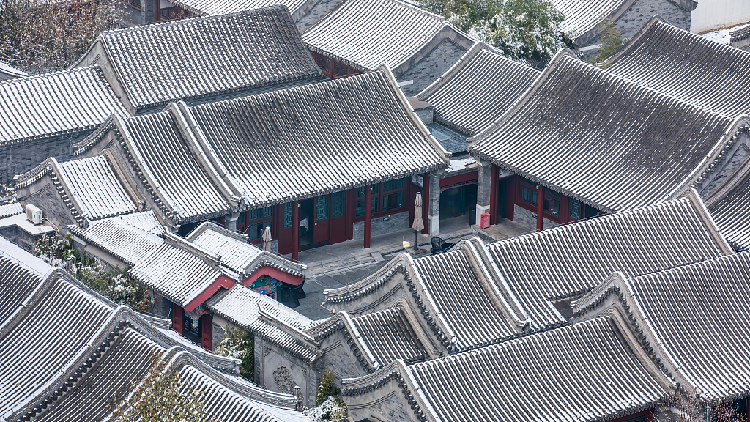

Rooflines & Shadows 屋檐与影
The curve of a siheyuan roof traces a quiet geometry of balance. Eaves collect light like water; tiles hold the warmth of sun and memory. In the afternoon, sparrows rest on ridge beasts — guardians of time, watching roofs ripple toward the horizon.